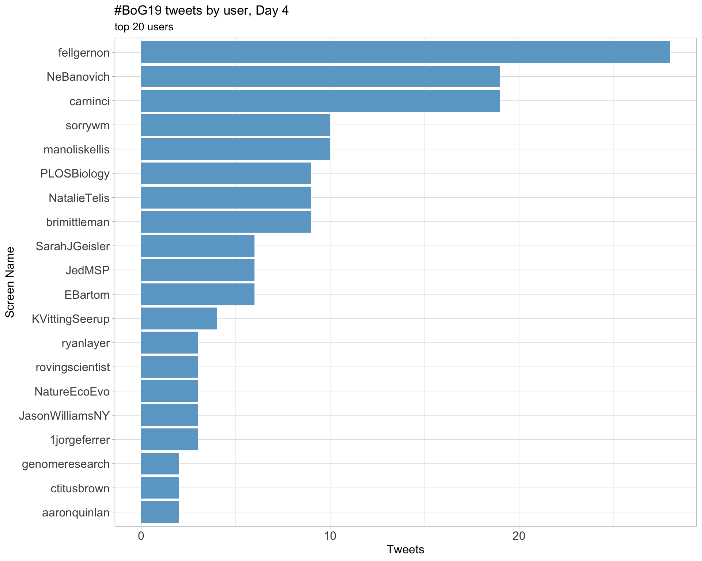
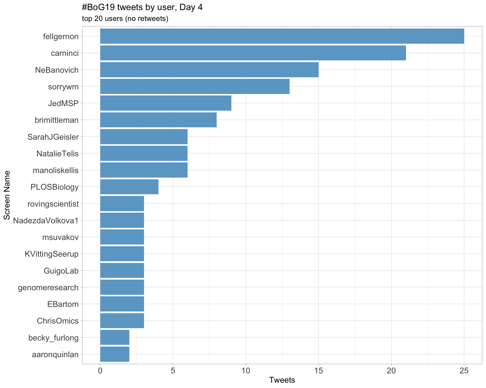
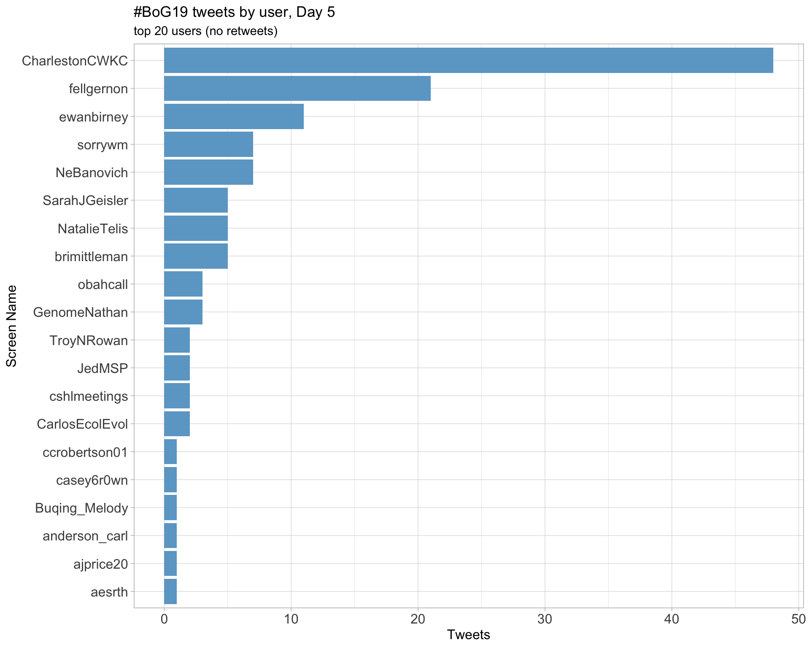

Twitter coverage of the Biology of Genomes 2019 conference
Javier Herrero
2019-05-13 11:55:23
1 Introduction
An analysis of tweets from the Biology of Genomes 2019 conference. A total of 2398 tweets from 677 users were collected using the rtweet R package.
2 Timeline
2.1 Tweets by day

2.2 Tweets by day and time
Filtered for dates 2019-05-07 - 2019-05-11 in the America/New_York timezone.

3 Users
3.1 Top tweeters

3.2 Top original tweeters

3.3 Retweet proportion

3.4 Top tweeters by time

3.5 Top tweeters by day
3.5.1 All tweets
Day 1

Day 2

Day 3

Day 4

Day 5

3.5.2 Original tweets
Day 1

Day 2

Day 3

Day 4

Day 5

3.6 Sources

4 Networks
4.1 Replies
The “replies network”, composed from users who reply directly to one another, coloured by page rank.

4.2 Mentions
The “mentions network”, where users mention other users in their tweets. Node colour, label size and alpha adjusted according to PageRank score.

5 Retweets
5.1 Retweet proportion

5.2 Retweet count

5.3 Top retweets
| screen_name | text | retweet_count |
|---|---|---|
| ewanbirney | Peak east coast techno-hipster cryptocurrency Americana cannabis genome #bog19 https://t.co/x4hOYHdeGe | 61 |
| StevenSalzberg1 | Just in time for #bog19, @genomeresearch posts early access version (today) of our paper where we found 2250 bacterial genomes that had human contamination, plus 3,437 “proteins” that are erroneous translations of these human contaminants https://t.co/koQRkmLRPw | 42 |
| MollyGasp | Like this year’s #BoG19 cover illustration? You can thank the multi-talented @Anna_Minkina, a talented artist and an even-more-talented grad student in the @JShendure lab! https://t.co/1KGplQaqSL | 30 |
| athmapai | Recent or soon to be grads: looking for a postdoc in gene regulation, RNA, and genomics? I’d love to chat! Come find me at #BoG19! I’ll be presenting poster #185 on Thursday https://t.co/FBsPTVH0Tn | 26 |
| NatalieTelis | Do you know how many questions have been asked since the last one asked by a woman? I do. It’s 32. #BoG19 | 25 |
| JedMSP | Oxford Nanopour #bog19 https://t.co/QeSusqSoaz | 20 |
| hagentilgner | Wow: ScISOr-Seq type work is catching on (https://t.co/JVU0YLcLLQ). Happy to see this and absolutely have to read in detail. BTW, if you like single-cell isoform work (see https://t.co/OFPcZDaxMt), come and see me at poster 271. We are hiring! #BoG19 | 18 |
| StevenSalzberg1 | Anonymous questions from the audience (moderated) are a terrific way to include more audience members. Otherwise the questions tend to be from a small cadre of frequent-askers. Plus it allows people to phrase their questions more carefully #BoG19 https://t.co/TOFIHMVlog | 17 |
| NatalieTelis | For those of you interested in the experiment we’re doing at #BoG19, here’s some preliminary results (right before the last talk): Participation, in person, has changed drastically. For the first time ever, we’ve accidentally created overrepresentation. https://t.co/3Zn0JSDFFS | 16 |
| aaronquinlan | Really fun talk from @BeEngelhardt on a Bayesian approach for optimizing experimental design to maximize cell type discovery from single-cell sequencing experiments. Calling it GT-TS (Good-Toulmin like estimator via Thompson sampling). Paper here: https://t.co/uWm7ySP4lG #bog19 | 14 |
6 Favourites
6.1 Favourite proportion

6.2 Favourite count

6.3 Top favourites
| screen_name | text | favorite_count |
|---|---|---|
| ewanbirney | Peak east coast techno-hipster cryptocurrency Americana cannabis genome #bog19 https://t.co/x4hOYHdeGe | 231 |
| MollyGasp | Like this year’s #BoG19 cover illustration? You can thank the multi-talented @Anna_Minkina, a talented artist and an even-more-talented grad student in the @JShendure lab! https://t.co/1KGplQaqSL | 203 |
| JedMSP | Oxford Nanopour #bog19 https://t.co/QeSusqSoaz | 152 |
| jtung5 | At the #BoG19 closing banquet and the big news is that @blekhman just received tenure!! Big congrats Ran, so well deserved!! https://t.co/9s8c9bMgdX | 117 |
| StevenSalzberg1 | Just in time for #bog19, @genomeresearch posts early access version (today) of our paper where we found 2250 bacterial genomes that had human contamination, plus 3,437 “proteins” that are erroneous translations of these human contaminants https://t.co/koQRkmLRPw | 82 |
| StevenSalzberg1 | Anonymous questions from the audience (moderated) are a terrific way to include more audience members. Otherwise the questions tend to be from a small cadre of frequent-askers. Plus it allows people to phrase their questions more carefully #BoG19 https://t.co/TOFIHMVlog | 79 |
| NatalieTelis | Do you know how many questions have been asked since the last one asked by a woman? I do. It’s 32. #BoG19 | 76 |
| carninci | #bog19 the first BOG without the portrait of Watson. Finally. https://t.co/i42jfyMKdt | 63 |
| NatalieTelis | For those of you interested in the experiment we’re doing at #BoG19, here’s some preliminary results (right before the last talk): Participation, in person, has changed drastically. For the first time ever, we’ve accidentally created overrepresentation. https://t.co/3Zn0JSDFFS | 61 |
| StevenSalzberg1 | Love it that the genome scaffolders used by @mike_schatz for the tomato genome are called SALSA2 and RaGOO. Coincidence? #BoG19 | 60 |
7 Quotes
7.1 Quote proportion

7.2 Quote count

7.3 Top quotes
| screen_name | text | quote_count |
|---|---|---|
| AnnaCuomo92 | Great Illustration and great meeting so far! #BoG19 https://t.co/MbRJgVUS5E | 2 |
| Awesomics | The Biology of Genomes (#BoG19) now underway https://t.co/uJpygePI9e. Access live streamed talks, abstract PDF, and video archive (for 6 weeks) at https://t.co/L8JiHY0BFH and enter “99” in the ‘Payment Authorized’ field. Cost=$99. Thanks @cshlmeetings! https://t.co/a4zUxtCduV | 2 |
| deboramarks | Club #BoG19 ever wants me as a ‘member’ I’d pretend I didn’t want to join but then I’d say yes within 30 seconds-sounds like a great conf https://t.co/8hW8w9NCcf | 2 |
| mammothbiosci | Exciting to hear about everything going on at #BoG19 - work in #genome #biology helps drive the creation of DNA-based diagnostic tools. https://t.co/9kf9P9T051 | 2 |
| DevilsAdvoMax | Big, big thanks @NatalieTelis and Friday chairs for pushing towards participatory diversity in the QAs. Clear improvements over the course of #BoG19 sessions - a more inviting spirit for young trainees, first-time attendees or simply more hesitant folks. Exemplary activism! 💕🙂 https://t.co/G1rrlNS8bB | 2 |
| girlscientist | Interesting – here’s what offering the chance to ask questions online during a talk did to in-person questions at #BoG19 (thread)…. https://t.co/zzr6KPoOer | 2 |
8 Media
8.1 Media count

8.2 Top media
| screen_name | text | favorite_count |
|---|---|---|
| ewanbirney | Peak east coast techno-hipster cryptocurrency Americana cannabis genome #bog19 https://t.co/x4hOYHdeGe | 231 |
| MollyGasp | Like this year’s #BoG19 cover illustration? You can thank the multi-talented @Anna_Minkina, a talented artist and an even-more-talented grad student in the @JShendure lab! https://t.co/1KGplQaqSL | 203 |
| JedMSP | Oxford Nanopour #bog19 https://t.co/QeSusqSoaz | 152 |
| jtung5 | At the #BoG19 closing banquet and the big news is that @blekhman just received tenure!! Big congrats Ran, so well deserved!! https://t.co/9s8c9bMgdX | 117 |
| carninci | #bog19 the first BOG without the portrait of Watson. Finally. https://t.co/i42jfyMKdt | 63 |
| NatalieTelis | For those of you interested in the experiment we’re doing at #BoG19, here’s some preliminary results (right before the last talk): Participation, in person, has changed drastically. For the first time ever, we’ve accidentally created overrepresentation. https://t.co/3Zn0JSDFFS | 61 |
| aaronquinlan | Are you interested in what can be learned about germline mutation dynamics from WGS of large, 3-generation pedigrees? Check out @tomsasani’s poster (240) today. Tom is exceptional and is looking for postdoc opps in the coming year. Preprint: https://t.co/CwpBnGP0f1 #bog19 https://t.co/DkbX1KqHPh | 58 |
| kajawasik | Whenever I’m back at @CSHL I realize how much I miss this place. It really made me a scientist and taught me to enjoy the small things in life like wine and cheese on President’s lawn.. #bog19 https://t.co/efXS121Mh9 | 46 |
| NeBanovich | Fish mafia #bog19 #GenomesSparkJoy https://t.co/yEgLgcQlAx | 40 |
| notSoJunkDNA | #bog19 “Germline and somatic variant calling with NovaSeq™ 6000 2x250bp reads” @nygenome poster with @mjs2225 @gnarzisi et al. To be presented on Friday but available at https://t.co/tETp7Brcmz https://t.co/Xky5B00oXy | 34 |
8.2.1 Most liked media image

9 Tweet text
9.1 Word cloud
The top 100 words used 3 or more times.

9.2 Bigram graph
Words that were tweeted next to each other at least 5 times.

9.3 Topic modelling
Top 10 words associated with 6 topics identified by LDA.

9.3.1 Representative tweets
Most representative tweets for each topic
Topic 1
| screen_name | text | gamma |
|---|---|---|
| JavierHerrero7 | .@nonfiniteloop — Can we detect post zygotic variations. Re-purpose GTEx data. Develop method to detect mutations from bulk RNA-seq and validate in Sun exposed/unexposed skin. More mutations in UV exposed skin, increase in UV-induced mut. signature #BoG19 | 0.9936772 |
| fellgernon |
Elise @EliseScience thinks that the + and - correlated eQTLs with aFC could be due to transcription factor binding levels Correlated aFC with TF expression in each tissue (used ENCODE data) 5.6% of tested TF-eQTLs pairs are corr with 1 TF 41% of are corr with > 1TF #BoG19 |
0.9929538 |
| carninci | Julie Jerber, mapping neuronal development eQTLs. eQTL limitations: tissue, time points, stimulations not feasible (in vivo). Instead use hiPS cells. Go beyond primary blood cells! using iPS can stimulate and then analyze at single cell level (capture different cells). #BoG19 | 0.9929538 |
| carninci | Calvert/2: single cell analysis enables detection of infiltrating cells in various pathological conditions of human brains. 27,696 patients genes tested across 96 patients, analyzed with Rasqual, -> 4382 eQTL genes (Including known disease candidate genes). #BoG19 | 0.9929538 |
| CharlestonCWKC | SM: acquired genomic mosaicism most apparent in blood-derived DNA (small number of SNPs that have unusual small allelic fraction in exome sequencing). Clonal hematopoiesis rarely detected in young individual, process takes decades to make up sig fraction of cell pop. #BoG19 | 0.9929538 |
| carninci | Wu/2 capitalize on exome sequencing, predict candidate new antigens. POC: Melanoma, predicting antigens, manufacturing antigens, given to patients with adjuvant to stimulate immune memory. Other study-glioblastoma. Combination with anti- PD-1. Successful promising so far. #BoG19 | 0.9926744 |
| carninci | Rockweiler/2: measuring skin exposed/not to UVs showing more skin mutation in caucasians if compared to African American donors. identify 79 mutations/donor, 4/tissues, 7% overlap, >82-88% validation rate. Mutation rate very variable across tissues and samples. #bog19 | 0.9926744 |
| carninci | Jerber/2: inducing dopaminergic neurons (3 time points, 11-30-52 days) and perturbations (toxicity drugs: rotenone); from 129 donors; Capturing nicely the cell types. Rotenone treatment shows clear gene expression differences -> discovers eQTLs for all cell types. #BoG19 | 0.9926744 |
| carninci | Rockweiler/3. Mutations are tissue specific (example: C->T in skin). Brain less mutations. Age/timing? Shared mutation is more ancient -> Surprise: 80% of mutations happen between zygote and gastrula! (surprise: in so few cell cycles!) Do not miss cell specific ones? #bog19 | 0.9926744 |
| carninci | Fiona Calvert; regulatory map of human primary microglia (~resident macrophages of CNS). Why important? -> genetics data points at association with Alzheimers. Single cell sequencing (15 patients) -> association with neurological disorders. Here 141 neurosurgery patients. #BoG19 | 0.9926744 |
Topic 2
| screen_name | text | gamma |
|---|---|---|
| carninci | Farren Isaacs; Multiple automated genome engineering (MAGE) works without double strand brake (big advantage). Eukaryotic MAGE. Using a ssODN annealing DNA replication fork enhances gene editing 100x. Multiplexing: msh2- allow multiple editing events. Cycling adds variants #bog19 | 0.9938864 |
| fellgernon |
EG is using 12 pcw (post conception weeks) human neural stem cells with a CRISPR/Cas9 deletion screen to learn more about enhancer function (2,233 of them) across 26,260 non-coding regions and 10,656 coding regions expressed in this cell line, + 2,608 bkg regs via ROADMAP #BoG19 |
0.9936772 |
| carninci | Sanders: Structural variations in single cells. Developed a method for single cell genome sequencing which maintains strand information, taking advantage of BdrU incorporation -> digestion of one strand -> sequencing the remaining strand. Measures depth, strand, phase. #BoG19 | 0.9936772 |
| fellgernon |
Ashley Sanders developed Strand-seq which takes advantage of the paternal homologues to track cells across divisions https://t.co/K3xs3OcG5I abstract: “resolves the individual homologs within a cell” scTRIP: single cell Tri-channel processing is the follow up method #BoG19 https://t.co/jKG5JgFcfW |
0.9932127 |
| fellgernon |
YQ from @MarthGabor wants to study subclone-specific mutations, #scRNAseq fits the task very well Challenge: cell coverage is low, roughly 3 MB of “real-estate” for determining the presence of somatic variants, so only ~20 somatic variants with coverage
|
0.9929538 |
| carninci | Luca Pinello @lucapinello CRISPResso (cool name!): analysis of CRISPR-Cas genome editing outcomes from deep sequencing! Now CRISPResso2! Which will take into account base modification, batch mode, allele specific quantification, biology informed alignment, fast processing! #bog19 | 0.9929538 |
| carninci | Ines Cebola, gene regulation in pancreas islets releated to type2 diabetes (T2D). GWAS previously identified; genomics (many experiments) identifies “regulome”, mapping enhancers etc. Next: how to assign enhancers to true targets; Can we understand molecular mechanisms. #bog19 | 0.9929538 |
| carninci | Hannah Currant, on UK Biobank, 500K individuals, 96M variants: focus on retinal phenotype. Retina inspected for physical differences (example: thickness, as “endophenotype”), which is connected with diseases/biology. ~31K GWAS- identify loci associated with retina problems #bog19 | 0.9926744 |
| cshlmeetings | Unable to make it to next week’s #BoG19? Live stream it! Each $99 subscription includes live stream of talks, PDF of the abstract book, and six-week access to #BoG19’s video archive. Register online: https://t.co/fMcgEzbvys and enter “99” in the ‘Payment Authorized’ field. https://t.co/AHcQxt1Sg6 | 0.9923720 |
| carninci | Evan Geller with the fascinating question of what makes human brains unique. Mutations of regulatory elements (enhancers) a better candidate than mutations in coding regions. Then experiments to mutagenize regulatory elements in human neural stem cells. #BoG19 | 0.9923720 |
Topic 3
| screen_name | text | gamma |
|---|---|---|
| CharlestonCWKC | JMR: Settlement of Near / Remote Oceania - modern humans arrived in Near Oceania ~40-65kya, but did not extend beyond Soloman island. Austronesian expansion from Taiwan ~ 5.5 kya; Lapita people arrived in Vanuatu ~3kya; mirgration from Bismarck Archipelago ~2.5kya. #BoG19 | 0.9929538 |
| CharlestonCWKC | JX: patients hospitalized for bone marrow transplantation provide longitudinal data for host-microbiome studies. For ~2 weeks patients are immunocompromised, hence carefully monitored. Has a lot of clinical variable/meta-data, and can collect stool sample for microbiome. #BoG19 | 0.9929538 |
| fellgernon |
Peter @genemodeller on types of joint analysis:
You could also cluster GWAS results. Did so using a bayesian approach (would make @BeEngelhardt proud ^^) based on a Dirichlet prior Can analyze simultaneously >1k GWAS #BoG19 |
0.9926744 |
| obahcall |
Appreciation for our wonderful #BoG19 organizers, who are also illustrious scientists celebrating recent well deserved recognitions! Matt Hurles @mehurles elected FRS @royalsociety Elaine Ostrander elected @theNASciences Jay Shendure @JShendure Lounsbery award @theNASciences |
0.9923720 |
| saketkc | My poster with @WenzhengLi and Andrew Smith for #bog19! We developed a simple method for finding actively-translating ORFs from Ribo-seq data. Performs well at both short and long ORFs. Code: https://t.co/s9Z77yGD2T (also on pip and bioconda) Poster: https://t.co/rKwfLQQVbI. https://t.co/gXdXAPqpEC | 0.9923720 |
| ewanbirney | MS: Good final chromosome level leveraging reference and HiC for validation, polishing with short reads using FreeBayes as the polisher. Shows an example of the “easy to break free” tomato (jointless) and “long stem” tomato which has a negative epistatic interaction #BoG19 | 0.9920435 |
| sorrywm | JXavier finds that gut microbial diversity is predictive of recovery from bone marrow transplants, uses modeling in model systems to identify inter-microbial interactions, and tries out recovering a patient’s microbiome using their own pre-operation fecal sample. #BoG19 | 0.9920435 |
| NatureEcoEvo |
A taste of recent pop gen papers published in NEE: Admixture with a ghost lineage in bonobos https://t.co/YGP2Ci0P9I Using selection at linked sites to estimate adaptation https://t.co/RRn3kmVmju Ancient genomes of Neolithic Britain https://t.co/OXJwkj7hbn #BoG19 |
0.9920435 |
| fellgernon |
Next up Anat Kreimer @anatkreimer from Nir Yosef’s lab on using massively parallel reporter assays (MPRAs) for high-throughput enhancer validation (uses a lentivirus that is transducted, then followed by RNA and DNA seq) Related pre-print: https://t.co/UeaaDYWm6U #bog19 |
0.9920435 |
| NeBanovich | RB: Describing why it is so difficult to quantify the heritability of the gut microbiome in humans - very plastic trait that is strongly impacted by dietary choices - decided to use the Amboseli Baboons - near-daily observation and fecal samples collected since 2000. #bog19 | 0.9916855 |
Topic 4
| screen_name | text | gamma |
|---|---|---|
| fellgernon |
SMAC-seq by Georgi Marinov and team re-captures the peaks by DNA-seq peak but also overlaps H4S37C chemical nucleosome mapping peaks Their profiles are nicely phased with Cse4 ChIP-seq as well (I don’t know what Cse4 nor H4S37C do! Tweet and later revisit? :P) #bog19 |
0.9929538 |
| nanopore | Will you be at Biology of Genomes next week? Register for our free lunch & seminar on Thursday 9th May. Steven Salzberg is giving a talk on ‘The Redwood Genome Project: sequencing and assembling the largest trees in the world’ join us here: https://t.co/gq8U4SXRh8 #bog19 https://t.co/GTbHxxK06n | 0.9923720 |
| CharlestonCWKC | MS: greedily identify the most diverse species from short-read data to identify candidates for long-read sequencing. PromethION improved sequencing throughput dramatically. Read length ~10-100kb length, rarily > 1 Mb. #BoG19 | 0.9923720 |
| ewanbirney | MS: Need to bring some new technology to capture SVs. there are 50 varieties with short reads from 10 main clades. Long Reads from @nanopore - start at MinION+GridION - 5/10 flowcells per genome - but then PromethION really changed the game. Best run 140GB flow cell #BoG19 | 0.9920435 |
| PLOSBiology | John Wolters @HittingerLab: Engineering yeast mtDNA: deplete mtDNA in recipient, put manipulated mtDNA back with gene gun, prime translation, go! Use small, less AT-rich Naumovozyme castellii backbone with S. cerevisiae genes patched in. Ongoing… #BoG19 | 0.9920435 |
| JavierHerrero7 | Ready for #BoG19. Poster tube to present the work of Cecilia (bright BSc student) and Garima (bright postdoc) on using vg for somatic variant detection. All started while chatting to @erikgarrison last year at #BoG18. At the airport, free coffee refills. Will need them! 😎 | 0.9916855 |
| CharlestonCWKC | KL: Otters diverged from terrestrial mustelids ~14 Mya, Sea otter diverged from giant otter ~10 Mya. Giant otter genome sequenced at Broad already, here sequence the Sea otter genome. #BoG19 | 0.9912937 |
| obahcall | So glad to see #BoG19 continues to lead in the genome way. (Nearly) all talks have been tweetable. And most speakers encourage: showing twitter handle, relevant preprints, software & QR code. Discussion in room & online goes much deeper from this- esp when we can read preprint. | 0.9912937 |
| ewanbirney | RF: Talks us about spermatid biology which form syncetium between gametes (!) - freely sharing the mRNA between spermatids but some genes can be selfish - this is the explanation for the Mouse T complex genetics - lead to extreme transmission distortion. #bog19 | 0.9912937 |
| carninci | Cristoph Bock on CISRP-single cell sequencing. High throughput functional biology! To establish causality in epigenetics- without using ONE GENE - ONE POSTDOC, which is very risky on postdoc career, unless you’re conservative!! -> arguments for the need high throughput! #bog19 | 0.9912937 |
Topic 5
| screen_name | text | gamma |
|---|---|---|
| fellgernon |
Joseph Thornton used an ordinal logistic regression model to study epistasis effects and main effects A joint model includes 2 extra sum of coefficients (sum of i to j) Misclassification rate is < 0.6% overall Presented a heatmap of main vs epistasis significant terms #BoG19 |
0.9932127 |
| ewanbirney | AH: Performed matched unrelated-GWAS vs sib-GWAS to look at this “three headed dragon”. Can plot sib-GWAS vs unrelated. Thankfully physical traits line up pretty well, but social traits (educational attainment, smoking, age at first sex) show strong shifts #bog19 | 0.9932127 |
| CharlestonCWKC | DV: PRS by either GW SNPs, conditionally independent SNPs, fine-mapped SNPs, etc. Effect size from UKB, validated in INTERVAL study (N ~ 43K). Measure of prediction accuracy is Pearson’s R - actually observed improvement with decreasing number of variants from 5M to 300) #BoG19 | 0.9929538 |
| CharlestonCWKC | RJ: Causal effect size distribution parameterized by effect size (beta) and number of causal SNPs (k) (Zhang et al. NG 2018). Want to know how is heritability divided - centered on 1 SNP or distributed among multiple SNPs, has implication to effect distr at regional level. #BoG19 | 0.9929538 |
| CharlestonCWKC | HM: male-bias not explained by de novo variants found on X chr. Haldane proposed a theory of de novo vs. inherited pathogenic variants in X-linked recessive genes, based on mutation-sel balanec. Expect 18%, but observed 32% #BoG19 | 0.9929538 |
| CharlestonCWKC | DV: BCX consortium (N > 560K EUropean ancestry meta-analysis) found > 10,000 variants associated with at least 1 of 29 blood count phenotypes, 510 rare (< 1% MAF). Statistical fine-mapping assign 10% of the loci to a single variant. #BoG19 | 0.9929538 |
| CharlestonCWKC | BP: observation “SNP with lower levels of LD have significantly larger per-SNP heritability” - MAF/LD-dependent architecture biases SNP heritability estimation. Today will discuss assumptions of estimation, and how to drop them to estimate SNP h2. #BoG19 | 0.9926744 |
| CharlestonCWKC | AH: under null, prediction accuracy should be equal between GWAS and sib-GWAS. If there are indirect effects, GWAS-based PS should outperform sib-GWAS-based. Find for most traits standard GWAS outperforms (matched sample size between GWASes) #BoG19 | 0.9926744 |
| CharlestonCWKC | AH: what to investigate if other factors beyond ancestry impacts PS. Used the “White British” of UKB. Performed GWAS in 120K men + 120K women, and then tested prediction accuracy in 20K men and 20K women, separately. Prediction accuracy differed by sex. #BoG19 | 0.9926744 |
| fellgernon |
Now Hanna Ollila @hannamollila from @jkpritch’s lab (his lab meetings must feel like today’s morning session hehe) on USF1 as a pleiotropic meta regular for sleep and circadian rhythms Story started back in her PhD in Helsinki #BoG19 |
0.9926744 |
Topic 6
| screen_name | text | gamma |
|---|---|---|
| majbvc | El @centrodemocratico buscará un candidato distinto a Ángela Garzón para enfrentar las elecciones en Bogotá. Será…??? O será otra salida en falso…?? #losleo @AlvaroUribeVel @diegomolanovega @SamuelHoyosM #FelizJueves #BoG19 #filbo2019 #video @ChurchillBogota @MiguelUribeT https://t.co/GUJ8jaznOy | 0.9936772 |
| CharlestonCWKC | JH: chromatin-modifying genes (CMBs) - diverse set of genes that bind chromatin and regulate cellular processes (remodelling or modification). In DDD project (13.6k patient with undiagnosed DD) de novo variants explain ~50% of risk, enriched in CMG set. #BoG19 | 0.9936772 |
| fellgernon |
Marina Ruiz-Romero (cc @GuigoLab) has ~50 million Illumina TruSeq 75 bp reads from 9 fly samples across 3 developmental stages She found that tissue specificity increases along differentiation from larva 3 to white pupa to fly (?) matches modEncode data based on PC1/2 #BoG19 |
0.9932127 |
| fellgernon |
Coronary artery disease is the leading global cause of mortality Current risk assessment of heart attack reviewed by Khera et al https://t.co/7BJCbpN2xv based on non-🧬metrics but @skathire has now shown that polygenic risk score is the first risk factor for this disease #BoG19 https://t.co/UuHPODF7cq |
0.9926744 |
| CharlestonCWKC | JX: can we explain sudden shifts in microbial composition? In mice, single dose of clindamycin lead to reduction of diversity, highly variable over time, but eventually by day 21 or so stabilize to a lower diversity composition. Replicated in multiple animals #BoG19 | 0.9926744 |
| fellgernon |
Mikkel @mikkelschierup is talking about Skov et al, bioRxiv, 2018 https://t.co/modrYeXWWz They can use this to derive mean archaic segmenting lengths (SGDP) & the total amount of archaic sequence Then they explored how the segments are shared by West Eurasia & East Asia #BoG19 https://t.co/XSh7Ah1kmI |
0.9923720 |
| CharlestonCWKC | JMR: exploratory PCA using archaic samples show Denisovan cline for Oceanian population. Neandertal anc ~uniformly distributed (~2-3%), but Denisovan anc more variable (0-3%), and scale well with Papuan ancestry (except some outlier population like Agta HG in Phillipines. #BoG19 | 0.9923720 |
| GenomeNathan |
@adamauton @jkpritch @molly_przew Don’t worry, you didn’t miss anything tonight – save two keynotes that anchored fresh insights on basic biological processes (mutation, development) in deep histories of the subfields in question. Basically, giants now…lucidly extending the footsteps of giants past. #bog19 |
0.9923720 |
| fellgernon |
Peter @genemodeller wants to build polygenic risk scores for many traits using their fine mapping approach He looked at the top 3, lowest 3 and middle 20% risk scores with the weights applied to @uk_biobank data. The results can inform policies for when to do screenings #BoG19 |
0.9923720 |
| CharlestonCWKC | JX: Typical profile - diverse microbiome initially, then antibiotic dosed -> reduction of diversity and expansion of E. Coli -> body temperature increase -> switch of antibiotic -> solves problem, different microbe expanded. #BoG19 | 0.9923720 |
Session info
## R version 3.5.1 (2018-07-02)
## Platform: x86_64-apple-darwin15.6.0 (64-bit)
## Running under: macOS 10.14.4
##
## Matrix products: default
## BLAS: /Library/Frameworks/R.framework/Versions/3.5/Resources/lib/libRblas.0.dylib
## LAPACK: /Library/Frameworks/R.framework/Versions/3.5/Resources/lib/libRlapack.dylib
##
## locale:
## [1] en_GB.UTF-8/en_GB.UTF-8/en_GB.UTF-8/C/en_GB.UTF-8/en_GB.UTF-8
##
## attached base packages:
## [1] stats graphics grDevices utils datasets methods base
##
## other attached packages:
## [1] bindrcpp_0.2.2 here_0.1 knitr_1.20
## [4] viridis_0.5.1 viridisLite_0.3.0 ggraph_1.0.2
## [7] wordcloud_2.6 RColorBrewer_1.1-2 ggrepel_0.8.0
## [10] ggplot2_3.0.0 igraph_1.2.2 topicmodels_0.2-8
## [13] tidytext_0.2.0 forcats_0.3.0 lubridate_1.7.4
## [16] tidyr_0.8.1 dplyr_0.7.6 rtweet_0.6.8
##
## loaded via a namespace (and not attached):
## [1] Rcpp_0.12.19 lattice_0.20-35 utf8_1.1.4
## [4] assertthat_0.2.0 rprojroot_1.3-2 digest_0.6.18
## [7] ggforce_0.1.3 slam_0.1-45 R6_2.3.0
## [10] plyr_1.8.4 backports_1.1.2 stats4_3.5.1
## [13] evaluate_0.12 highr_0.7 httr_1.3.1
## [16] pillar_1.3.0 rlang_0.2.2 lazyeval_0.2.1
## [19] Matrix_1.2-14 rmarkdown_1.10 labeling_0.3
## [22] stringr_1.3.1 munsell_0.5.0 broom_0.5.0
## [25] compiler_3.5.1 janeaustenr_0.1.5 pkgconfig_2.0.2
## [28] htmltools_0.3.6 tidyselect_0.2.5 tibble_1.4.2
## [31] gridExtra_2.3 fansi_0.4.0 crayon_1.3.4
## [34] withr_2.1.2 MASS_7.3-50 SnowballC_0.5.1
## [37] grid_3.5.1 nlme_3.1-137 jsonlite_1.5
## [40] gtable_0.2.0 magrittr_1.5 units_0.6-1
## [43] scales_1.0.0 tokenizers_0.2.1 cli_1.0.1
## [46] stringi_1.2.4 farver_1.0 reshape2_1.4.3
## [49] NLP_0.2-0 xml2_1.2.0 tools_3.5.1
## [52] glue_1.3.0 tweenr_1.0.0 purrr_0.2.5
## [55] parallel_3.5.1 yaml_2.2.0 tm_0.7-6
## [58] colorspace_1.3-2 bindr_0.1.1 modeltools_0.2-22